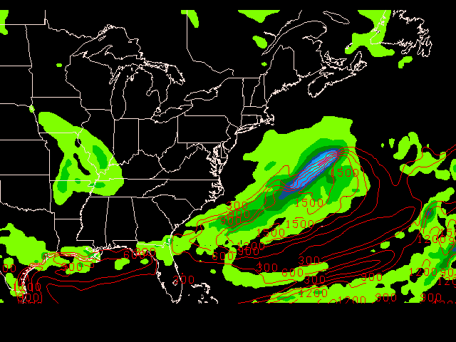
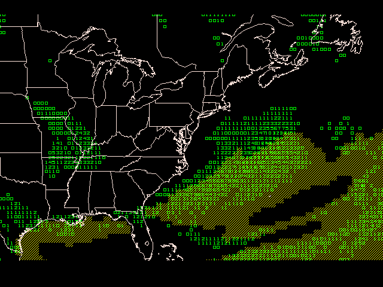
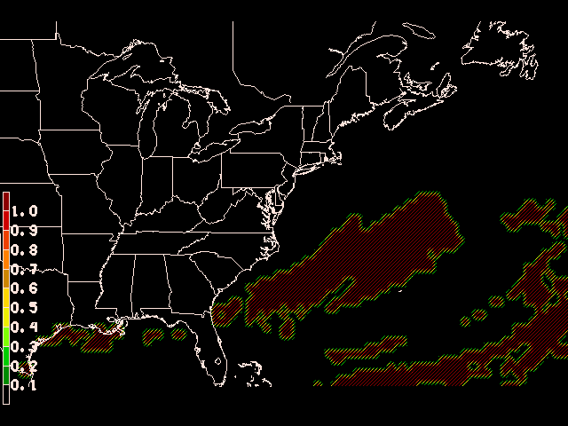

The GFS model provides deterministic output at the 72 hour forecast time for 6 hour accumulated precipitation P06M and boundary layer CAPE (using an internal function) as shown in GDPLOT2 using:
GDFILE = gfs004
GDATTIM = f072
GLEVEL = 0 ! 2
GVCORD = none ! hght
SCALE = 0
GDPFUN = p06m ! cape(pres@0%none,hght@0%none,tmpc,dwpc)
TYPE = f ! c
CONTUR = 3/3
CINT = 300
LINE = 2/1/1
FINT = .25;2.5;6.35;12.7;19.05;25.4;31.75;38.1;44.45;50.8;63.5;76.2;101.6;127;152.4;177.8
FLINE = 0;21-30;14-20;5
GAREA = 25;-100;50;-50
PROJ = STR/90;-100;0
GEMPAK-GDPLOT2>r

The figure above shows areas of precipitation with low CAPE values. We also see several areas with large cape values and little precipitation.
Now plot the areas of greater than .25mm (red contour lines), and CAPE values exceeding 300 J Kg^-2 (yellow shading) in GDPLOT2 using:
GDFILE = gfs004
GDATTIM = f072
GLEVEL = 0 ! 2
GVCORD = none ! hght
SCALE = 0
GDPFUN = sgt(p06m,.25) ! sgt(cape(pres@0%none,hght@0%none,tmpc,dwpc),300)
TYPE = p ! f
CONTUR = 3/3
FINT = ! 100
FLINE = ! 5/7
COLORS = 3
TEXT = 0.5
GEMPAK-GDPLOT2>r

Observing the plot above, we can visually detect several regions where precipitation probability and CAPE values might suggest likely areas of thunderstorm activity where the two contour regions intersect. We can quantify the probability by using the logical operator AND() to compute the probability of both conditions as shown below:
GDFILE = gfs004
GDATTIM = f072
GLEVEL = 2
GVCORD = hght
SCALE = 0
GDPFUN = and(gt(p06m,.25),gt(cape(pres@0%none,hght@0%none,tmpc,dwpc),300))
TYPE = f
CONTUR = 3/3
CINT =
LINE =
FINT = .05/.05
FLINE = 0;23-13/7
CLRBAR = 1
GEMPAK-GDPLOT2>r
